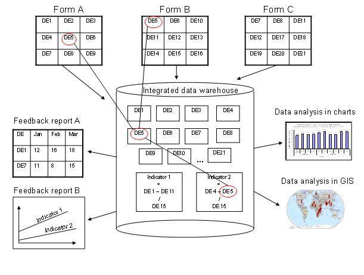

Datasets determine what raw data that is available in the system, as they describe how data is collected in terms of periodicity as well as spaital exten. Data sets define the building blocks of the data to be captured and stored in DHIS2. For each data dimension we decide what level of detail the data should be collected at namely 1) the data element (e.g. diagnosis, vaccine, or any event taking place) and its categories (e.g. age and gender), 2) the period/frequency dimension, and 3) the organisation unit dimension. For any report or data analysis you can never retrieve more detailed data than what is defined in the data sets, so the design of the datasets and their corresponding data entry forms (the data collection tools) dictate what kind of data analysis will be possible.
It is important to understand that the data entry forms or datasets themselves are not intrinsically linked to the underlying data value and that the meaning of data is only described by the data element (and its categories). This makes it perfectly safe to modify datasets and forms without altering the data (as long as the data elements stay the same). This loose coupling between forms and data makes DHIS2 flexible when it comes to designing and changing new forms and in providing exactly the form the users want.
Another benefit of only linking data to data elements and not to forms, is the flexibility of creating indicators and validation rules based on data elements, and also in providing any kind of output report (in pivot tables, charts, maps etc) that can combine data individually or across forms, e.g. to correlate data from different health programs. Due to this flexibility of enabling integration of data from various programs (forms) and sources (routine and semi permanent (population, staff, equipment)) a DHIS2 database is used as an integrated data repository for many or all parts of the aggregated data in a larger HIS. The figure below illustrates this flexibility.
|  |
In this example, we see that data elements from multiple forms can be combined to create a given indicator. As a more concrete example, one might collect "Population under one year of age" in an annual data set by district, and then collect a data element like "Fully immunized children" by month at the facility level. By annualizing the population, we can generate an approximation of the effective monthly population, and combining this with the aggregate total of the number of fully immunized children by month, it would be possible to generate an inidicator "Fully immunized coverage", consisting of the aggregated total of children who are fully immunized, divided by the effective monthly population.